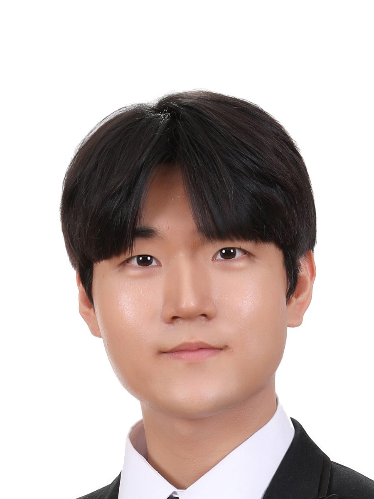

I want to understand people — what they choose, and what their choices don't fully explain.
I'm a PhD student at the Edwardson School of Industrial Engineering, Purdue University. I combine revealed choice data with physiological signals to get closer to what someone actually intends, not just what they report.

Education
About
(via Daejeon & Seoul, Korea)
I build models of how people decide, and how experience changes those decisions. Most recently that meant separating a patient's evolving preferences from the sheer inertia of past hospital visits — teasing apart what someone actually prefers from what habit and history make them do.
I've come to trust two kinds of evidence about people: what they reveal through the choices they actually make, and what their bodies register whether they mean to show it or not. Along the way I've worked with multimodal physiological data (EEG, ECG), Bayesian filtering for epidemic modeling, and MDP-based resource allocation — different problems, the same underlying question about how people decide under uncertainty.
Outside the lab: strategic board games, an unreasonable amount of coffee, guitar, and a Korean-language engineering blog where I re-explain papers I had to read twice to understand once.
Experience
Research & Recognition
- Veritas (Research) Scholarship — Korea University2023
- Veritas (Educational) Scholarship — NAVER Connect Foundation2019
- Semester High Honors — Korea University2020 · 2022 · 2023
- Oracle Certified Professional, Java SE 6Cert.
- Advanced Data Analytics Semi-Professional (ADSP)Cert.
Let's talk.
Open to conversations on human factors, behavioral modeling, and healthcare analytics — or just about the last paper that made you think twice.